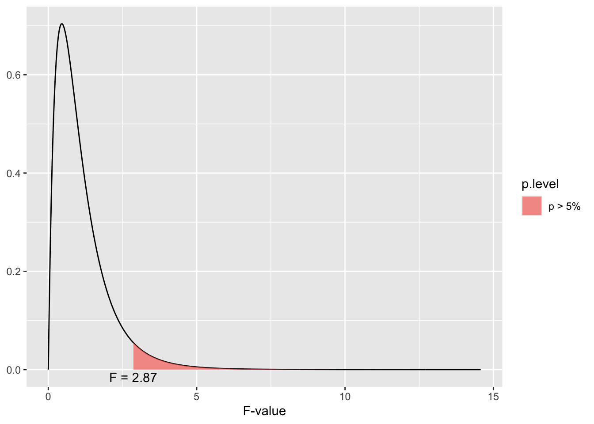

ANOVA stands for analysis of variance, which is based on the F statistic, which is named after the statistician who invented it, R. A. Fisher. The statistic is fundamentally the ratio of two independent variance estimates of the same population variance (Pagano, 2013). Thus the basic formula is:
Ultimately the F test or ANOVA is used to analyze differences in the means of more than two groups. Remember we use the t test to analyze differences in the means of two groups, but when we have more than two groups we need a different test. In this case, we use the ANOVA.
Null and Alternative Hypotheses
Here are the basic assumptions of the two hypotheses used in an ANOVA.
So the Null hypothesis assumes there will be no differences between the means or that the groups come from the same population, while the alternative assumes there is a difference between the means or the groups come from different populations. One thing to remember, the ANOVA test can only identify if some of the group means are different. It cannot identify which means are different. So the means for group 1 and 2 may be statistically the same, while the means for group 2 and 3 may be different, but the ANOVA test will still be significant.
Signal vs. Noise
Remember our basic formula for statistics.
\[
Statistics = \frac{Signal}{Noise}
\]
Signal refers to systematic variation or variation based on the causal work of the independent variable. Whereas noise refers to unsystematic variation or variation which is not the result of the independent variable. Unsystematic variation is the result of measurement error and we’ve seen that measurement error occurs in all types of measurement and statistics.
So the changes observed in our dataset that are the result of systematic variation have to be larger then the differences we observe as the result of unsystematic variation for our statistical finding to be considered significant.
Remember that the null hypothesis assumes no differences between the groups, whereas the alternative hypothesis assumes the groups will be different because of the manipulation of the independent variable.
Levels of the Independent variable
ANOVA enables the comparison of more than two groups, which is often structured to analyze different levels of an independent variable. By levels we are referring to different amounts or quantities of the independent variable. For example, one group may be the control group, but then subsequent groups may have different quantities of the independent variable.
Notice that there is 3 levels to this independent variable based on the amount of time spent in preschool per week: 5 hours, 10 hours, and 20 hours. Notice that there is no control group. Everyone is in preschool. So the hypothesis is really whether more time in preschool increases language development.
Creating Factors
An important first step for data analysis is to make sure the variables are in the correct format. We can use the str command to figure out the types of variables in the dataset.
Language.Score is an integer int or whole number, which makes sense for a measurement scale that is looking at language development.
Group is a character chr, which is fine for defining groups, but we would prefer it to be a factor so it could more easily distinguish the levels of the independent variable.
So let’s change the variable type for group to a factor.
The first question for the dataset is whether the means are different. More specifically, the mean level of language development should increase with an increase in hours spent at preschool.
# A tibble: 3 × 3
Group n mean
<fct> <int> <dbl>
1 5 Hours 10 76.6
2 10 Hours 10 85.2
3 20 Hours 10 91.6
So the means are different and the language score increases with hours spent in preschool. Now it needs to be determined if the differences between the means are statistically significant. This is where we need the ANOVA or F Test.
Review
Remember that the F test or ANOVA is based on comparing variation between the groups (signal) to variation within the groups (noise). So the equation is:
\[
F = \frac{MS_{between}}{MS_{within}}
\]
However, there are some different steps we need to take to get to the two types of Mean Squares \(MS\) for this formula.
For this usage of the ANOVA, the total variability\(SS_T\) is partitioned (divided or separated) into 2 groups or sources. The variability between the groups \(SS_{between}\) and the variability within the groups \(SS_{within}\). Remember that variability between groups gives us evidence that the groups are different and if the variability is greater than the variability within the groups than our F value will be significant.
However, the two sum of squares values (\(SS_{within}\) & \(SS_{between}\)) need to be averaged based on the number of scores from which they were calculated in order to eliminate bias. In this case we’ll use the degrees of freedom to accomplish this task \(df\). Here is the formulas:
\[df_{within} = N - 1\]
\[df_{between}=k-1\]
\(N\) stands for the number of observations or participants we have in all the groups because it deals with individual variation. \(k\) stands for the number of groups we have because it deals with group variation. Here is an overview of the entire formula.
\[
\frac{SS_{between}/df_{between}}{SS_{within}/df_{within}} = \frac{MS_{between}}{MS_{within}}= F
\]
F Distribution
Here’s a look at the F distribution. Notice both the similaries and differences to the binomial and t and z distributions.
dist_f(deg.f1 =4, deg.f2 =20, p = .05)

The F distribution is also a family of curves based on the degrees of freedom. Notice that the distribution has a positive skew (more scores at the lower end of the distribution) and it also only had one tail rather than two tails. This is another indication that the F test can’t determine the direction of difference between the groups, only if there is a difference between the groups.
Using R Studio to calculate the ANOVA
In another section, ANOVA was used to test a linear regression model. For that model a comparison was made between the improvement of the linear model in comparison to the grand mean \(SS_{M}\) and the measurement error based on the residuals \(SS_{R}\). There is a strong statistical relationship between regression and ANOVA and in fact ANOVA for groups can be understood as a part of the general linear model (GLM). The differences between the groups \(SS_{between}\) can be understood as a line composed of the group means and compared to the grand mean \(SS_M\). The greater the difference between this line and the grand mean, the greater the difference between the group means. \(SS_{within}\) can be understood as the residuals for each observation and the grand mean \(SS_R\). Everything else remains the same (\(df\), \(MS\), and \(F\)) when running the ANOVA in R Studio.
Running the Code
Here’s the basic set up for running ANOVA
Object <- aov(Dependent Variable ~ Independent Variable, data = your dataset)
So in this case
ANOVA_1 <-aov(Language.Score~Group, data = ch15ds1)
For ANOVA, the results are saved in an object, so we need to use summary to get the results.
summary(ANOVA_1)
Df Sum Sq Mean Sq F value Pr(>F)
Group 2 1133 566.5 8.799 0.00114 **
Residuals 27 1738 64.4
---
Signif. codes: 0 '***' 0.001 '**' 0.01 '*' 0.05 '.' 0.1 ' ' 1
“Group” is the independent variable so Sum Sq stands for the \(SS_{between}\) or \(SS_M\), whereas “Residuals stands for the \(SS_{within}\) or \(SS_R\).
The F value is 8.799 and the significance or p value is 0.00114, so the results are significant.
TukeyHSD post hoc tests revealed that 20 hours a week of preschool (M=91.6, SE=1.96) resulted in significantly higher levels of language development in comparison to 5 hours (M=76.6, SE=3.78). This difference, -15 95% CI[-23.90, -6.10] was significant with an adjusted p = .0008.